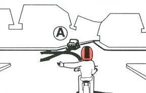

Tanácsok a tanuláshoz
Czirkos Zoltán · 2015.02.18
Hogyan kell tanulni a prog ZH-kra? Ne kövesd el azt a hibát, hogy csak a megoldott feladatokat nézegeted!
Minden tárgy számonkéréseire más módon kell tanulni. Máshogyan egy történelem tesztre, máshogyan egy KRESZ vizsgára, és máshogyan a programozásra.
A programozás inkább a KRESZ-re hasonlít. Töriből megtanulhatsz két dolgot, mondjuk azt, hogy 1222 és hogy 1848: a többit attól még nem fogod tudni. Viszont ha a KRESZ-hez megtanulod ezt a két dolgot: aki szemből jön, azt elengeded, és aki jobbról jön, azt is elengeded – akkor szinte mindent tudsz. (A többi úgyis ki van táblázva.) A képes kérdések 98%-ára ebből a két szabályból ki tudod következtetni a választ. Ha még egy kis gyakorlatod is van, akkor kérdésenként semmivel nem több, mint két másodperc alatt.
Tipikus hibák a prog ZH-kra készülés és a ZH írás alatt
Ha rossz módszerrel ugrasz neki, abból nem sok jó fog kisülni.
- Hiba a ZH előtti este vagy éjjel nekiállni megtanulni programozni. Nem fog menni.
- Nagy hiba a honlapon lévő anyagokat, vagy más forrásokat csak olvasgatni. Ez nem vezet sehova. Attól még, hogy egy megoldást már láttál leírva, nem biztos, hogy tudod reprodukálni is. Sőt akár ha értetted is, akkor sem biztos, hogy egyből – a ZH stressze alatt – le tudod írni újra egy tök üres lapra!
- Nagy hiba a tavalyi, tavalyelőtti,
névvel ezelőtti kzh/nzh feladatsorokra építeni. Lehet, hogy olyasmi lesz, ez tény. De ez nem jelenti sem azt, hogy biztos olyan lesz, és azt sem, hogy biztos ugyanaz lesz. - Hiba a C puskára bízni a ZH eredményedet. A puska nem arra való, hogy ott megtaláld
a megoldást! Arra jó, ha pl. elfelejted egy függvény paraméterezését, vagy ilyesmit, azt meg tudd nézni.
Pl. „Hm, vajon az
fwrite()első vagy az utolsó paramétere volt a fájl? Hogy is volt a méret megadása? Hogy is kellett aprintf()-nél hexa számot kiírni?” Ilyenre tud csak válaszolni a puska. De olyan függvényt nem fogsz rajta találni, ami megcseréli egy sztringben a keresztnevet és a vezetéknevet. Olyat se, amelyik telefonszámból kiszedi a körzetszámot. - Hiba megpróbálni egy egész nagyfeladat megoldását egyetlen hatalmas kódblokkba sűríteni.
- Hiba kritika nélkül mindenféle dolgokat összeszedni a netről. Azért, mert valaki szeret fórumozni, nem biztos, hogy tud programozni is. Példa: szörnyű római szám program.
Jó szokások és módszerek a programozás tanulásához
- Igenis próbáld megoldani a feladatokat! Ha tudod, mi a megfelelő eszköz (pl. pointer), de nem jól használod, az előadásanyagot nézd, ne a megoldást! Ha úgy sem megy, nézd meg a megoldás magyarázatát, ha van – ott le van írva az alapgondolat vagy a trükk, ha épp valami trükk kell. Ha úgy sem, nézd meg a megoldás releváns részét – és továbbra is, próbáld meg magad befejezni a kódot!
- Mindezt csakis gép mellett tedd. Ott a fordítóprogram, nem lehet kérdés, hogy működik-e
a programod vagy nem. Próbáld ki! Használd a nyomkövetőt!
Rakd tele a programjaidat
printf()-ekkel, hogy lásd, mit történik a változókkal, merre megy a végrehajtás, egyáltalán mit csinál a program, amit beírtál! - Engedélyezd a fordítód figyelmeztetéseit (3. előadás). Egy csomó mindenre meg fognak tanítani. Ne csak a build&run, hanem a sima build gombot is használd a fejlesztőkörnyezetben! Különben nem fogod látni a hibaüzeneteket.
Jó tanácsok az algoritmizáláshoz
- Van 3-as ebben a számsorban:
20275922897612919478450610623615547? Hány mássalhangzó van awebböngésző-kiterjesztésszóban? Amiket most csináltál, azt kell megfogalmazni C-ben. Az algoritmus úgy működik, mint ahogy papíron is elvégeznéd a feladatot. A számítógépet azért találták ki, hogy a mechanikus munkát elvégezze. - Ha egyszercsak copypastelni támadna kedved, hessegesd is el ugyanazzal a lendülettel a gondolatot. Ciklust kellene írnod vagy függvényt. Lesz időd a ZH-n leírni kétszer vagy netán tízszer ugyanazt?
- Gondolkodj egyszerre csak egy dolgon! Ha valami túl bonyolultnak tűnik, akkor azt nem egy
nagy, ömlesztett kódrészletben kell megírni. Használj top-down tervezést és függvényeket!
Példa
„2012-höz alulról a legközelebbi prímszám, amely számjegyeinek összege 14.” Először is arra kell rájönni, hogy 2012-től lefelé elindulva az első olyan szám, amit megtalálunk, pont az lesz, amit keresünk. Szóval, „amíg nem olyan, megyünk visszafelé”:ev = 2012; while (!olyan) ev--;Milyen az olyan? Prím és 14-es számjegyösszegű:ev = 2012; while (!(prim(ev) && szamjegyosszeg(ev)==14)) ev--;Elémain(), mögéprintf()ésreturn, lap tetejére#include, és már el is van kezdve. A maradék két megírandó függvény szinte triviális. - Ha erre most nem kellett kattintanod, nem állítottad be a portálon a feladatmegoldások láthatóságát. (Vagy nem jelentkeztél be. :))
- Ha nem írtad meg a programot, ami a fenti számsorban megszámolja a hármasokat, és ami megmondja a mássalhangzók számát, tedd meg! Akár beugrók is lehetnének a ZH-n.
tl;dr
Szóval hogyan kell tanulni a prog ZH-kra? „Sehogyan.” Ez nem egy „tanulható”, hanem egy „gyakorolható” tárgy.